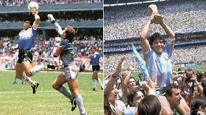

My career has so far last 13 years and is going strong.
I had too many injuries in high school to get recruited for college but I am an officially a part of 2 intramural teams and also unofficially part of 2 more.
Soccer is a time to forget all school work and just have fun with people you enjoy being around.
Especially in high school with those big games under the lights and all the fans cheering it gave you a real purpose to be on that field.
- Neymar Jr is the most expensive transfer of all time and it cost PSG €222 million to acquire him from Barcelona in 2017.
- Diego Maradona onced scored a goal with this hand and it is known as the Hand of God since the handball wasnt seen by the ref
- If your team takes a free kick and it ends up in your own net a corner is given rather than an own goal
- Lionel Messi has the most Ballon d'Or awards (8) of all time and second place is pretty far behind with 5
- The first ever soccer ball was an inflated pig bladder
- A referee once gave himself a red card after punching a player in the face
- FIFA, a soccer organization founded in 1904, has more members than the United Nations (UN)
- An Olimpico is when you score a goal directly from a corner kick
- The highest attendance ever recorded at a soccer match was 199,854, for a match between Brazil and Uruguay in 1950.
- Lionel Messi scored 91 goals in a calender averaging more than a goal a game for a whole year
- Manchester City were the first english team to finish a league campaign with 100 points
- The World Cup has been canceled twice, once in 1942 and once in 1946, due to World War II
- The first soccer video game was released in 1982, called “Soccer” for the Atari 2600.
